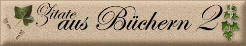

|


Zitate
sind Sprüche,
von denen man glaubt,
dass man sie eigentlich selber hätte sagen können
Anonym


Mögest du Ruhe finden, wenn der Tag
sich neigt
und deine Gedanken noch einmal die Orte aufsuchen,
an denen du heute Gutes erfahren hast.
Auf dass die Erinnerung dich wärmt
und gute Träume deinen Schlaf begleiten.
~Irischer Segenswunsch~
Die Liebe kann man nicht erklären.
Aber wer wären wir, wenn wir es nicht versuchten
Aus: DAs Buch von Blanche [Wittmann] und Marie [Curie]
von Per Olov Enquist
Liebe
Liebe ist eine Blume, deren Same der Wind
herweht und der blüht, wo er hinfällt. Es ist ebenso lächerlich, einer
Frau darüber zu zürnen, dass sie uns nicht liebt, als mit dem Schicksal zu
hadern, uns rote und nicht schwarze Haare gegeben zu haben. In Ermangelung
der Liebe gibt es Freundschaft, Freundschaft ist das Geheimnis des
Ehelebens! Man kann darunter leiden, nicht geliebt zu werden, aber man
darf es nicht merken lassen, sonst ist es, als verlöre man die Hälfte des
Reichtums, der uns bleibt, aus Verzweiflung, die erste Hälfte verloren zu
haben.
- Honorè de Balzac
Im Norden versperrt der Blick auf den Berg des Ungetanen
die Sicht auf das ruhige Tal des Erreichten.
Im Süden lässt uns die endlose Weite des Ozeans der Möglichkeiten
die heimische Bucht der Zufriedenheit vergessen.
Anton Korduan
Zuerst schließen
wir die Augen,
und dann sehen wir weiter.
Graffiti
Was man am
meisten ersehnt, erfüllt sich nicht, und wenn es eintrifft, dann nicht zu
der Zeit noch unter den Umständen, wo es die größte Freude bereitet hätte.
Jean de La
Bruyère
Zu späte Erfüllung einer Sehnsucht labt nicht mehr. Die lechzende Seele
zehrt sie auf wie glühendes Eisen einen Wassertropfen.
Marie von Ebner-Eschenbach
Unsere Wünsche
sind Vorgefühle der Fähigkeiten, die in uns liegen, Vorboten desjenigen,
was wir zu leisten imstande sein werden. Was wir können und möchten,
stellt sich unserer Einbildungskraft außer uns und in der Zukunft dar; wir
fühlen eine Sehnsucht nach dem, was wir schon im stillen besitzen. So
verwandelt ein leidenschaftliches Vorausergreifen das wahrhaft Mögliche in
ein erträumtes Wirkliche.
Johann Wolfgang von Goethe
Jede Freude füllt, jeder Schmerz leert dich, aber in jener hat noch
Sehnsucht Platz, in diesem noch Zuversicht.
Jean Paul
Die Sehnsucht
ist es, die unsere Seele nährt und nicht die Erfüllung; und der Sinn des
Lebens ist der Weg und nicht das Ziel. Denn jede Antwort ist trügerisch,
jede Erfüllung zerfließt uns unter den Händen, und das Ziel ist keines
mehr, sobald es erreicht wurde.
Arthur Schnitzler
Jene, die ihre
Sehnsucht zu zügeln wissen, können das nur, weil ihre Sehnsucht schwach
genug ist, beherrscht zu werden.
William Blake
Nicht was wir
erleben, sondern wie wir empfinden, was wir erleben, macht unser Schicksal
aus.
Marie von Ebner-Eschenbach
Das Schicksal
gibt dem Menschen oft den Wundbalsam früher als die Wunde:
Jean Paul
Noch ist nichts bestimmt, und alles möglich - Noch spielt die
Hand, mutwillig zögernd, mit den Losen in der Urne des Schicksals, welche
auch das große enthält - warum sollte sie es nicht fassen können? Sie
säumt und säumt, indem schon die bloße Möglichkeit fast ebenso wollüstig
ist, wie die Wirklichkeit - Indessen spielt ihr das Schicksal einen Zettel
unter die Finger - es ist nicht das große Los, es ist keine Niete, es ist
ein Los, wie es Tausende schon getroffen hat, und Millionen noch treffen
wird.
Heinrich von Kleist
Das Schicksal
mischt die Karten und wir spielen.
Arthur Schopenhauer
Künftiges Glück
ist wie ein tropisches Gestade: es sendet weit über den Ozean, der noch
dazwischen liegt, seinen lauen Erdgeruch herüber, balsamischen Duft, von
dem man sich berauschen lässt, ohne den Horizont nach dem Woher zu fragen.
Gustave Flaubert
LIEBE
Es ist schwer zu
definieren, was Liebe ist. Nur dies weiß man von ihr:
In der Seele ist sie
eine Leidenschaft, die herrschen will;
im Geist Sympathie; im Körper nur
der heimliche Drang, nach allem Versteckspiel ans Ziel seiner Wünsche zu
gelangen.
Herzog von La Rochefoucauld
Die Liebe -
darüber sind nun alle Gelehrten einig - ist eine der kuragiösesten
Eigenschaften des menschlichen Herzens, die Bastionen von Rang und Stand
schmettert sie mit einem Feuerblicke danieder, die Welt ist ihr zu eng und
die Ewigkeit zu kurz. Ja, sie ist eigentlich ein Poetenmantel, den jeder
Phantast einmal in der kalten Welt umnimmt, um nach Arkadien auszuwandern.
Joseph von Eichendorff
Wir
Menschen haben einen großen Fehler.
Wir investieren Gefühle, anstatt sie zu verschenken.
Unbekannt
Denn die Liebe
ist wie ein Baum: sie treibt von selbst,
schlägt ihre Wurzeln tief in
unser ganzes Wesen,
und grünt noch oft auf einem gebrochenen Herzen
weiter.
Victor Hugo
Die
Liebe ist eine köstliche Blume, aber man muss den Mut haben,
sie vom Rande
eines schauerlichen Abgrundes zu pflücken.
Neben Lächerlichkeit droht der
Liebe stets die verzweifelte Aussicht, von dem geliebten Wesen verstoßen
zu werden, und dann bleibt für den Rest des Lebens nur mehr eine
unausfüllbare Lücke.
Stendhal
Lieben heißt,
das Ganze eines Menschen zu bejahen,
mögen die Einzelheiten sein, wie sie wollen
Otto Flake
Ich will
mit dem gehen, den ich liebe.
Ich will nicht ausrechnen, was es kostet.
Ich will nicht nachdenken, ob es gut ist.
Ich will nicht wissen, ob er mich liebt.
Ich will mit dem gehen, den ich liebe.
Bert
Brecht
Die
große Wahrheit, die die Natur erfüllt,
wird nicht mittels der menschlichen Sprache
von einem zum anderen weitergegeben.
Die Wahrheit bevorzugt die Stille,
um ihre Botschaft liebenden Seelen mitzuteilen.
Khalil
Gibran
Der
große Mann geht seiner Zeit voraus,
der Kluge geht mit ihr auf allen Wegen,
der Schlaukopf beutet sie gehörig aus,
der Dummkopf stellt sich ihr entgegen.
Eduard
von Bauernfeld
Nimm die
Welt von der leichten Seite,
und der Geist wird frei von jeder Last sein.
Miss den Zehntausend Dingen keine Bedeutung bei,
und dein Herz wird nicht verwirrt sein.
Lass dir Leben und Tod gleich wichtig sein,
und dein Verstand wird ohne Angst sein;
nimm gegenüber Wandel und Beständigkeit
die gleiche Haltung ein,
und nichts wird deine Klarheit trüben.
(Lao-tse)
Ganzheit
Sobald wir das Dasein als Ganzeit erfassen,
und jede Krankheit als Reifen begreifen,
wird uns das Leben geheilt entlassen,
um höhere Sphären zu durchstreifen
und alles Werden und Vergehen
als Spiel der Einheit zu verstehen.
Unbekannt
Alles,
was zu besitzen sich lohnt,
lohnt auch, daß man darauf wartet.
Marilyn
Monroe
Es gibt
zwei Arten von Freunden:
Die einen sind käuflich,
die anderen sind unbezahlbar.
Unbekannt
Die
Herrlichkeit der Welt
ist immer adäquat der Herrlichkeit
des Geistes, der sie betrachtet.
Der Gute findet hier sein Paradies,
der Schlechte genießt schon hier seine Hölle.
Heinrich Heine
Sorgen
sind wie der Sand in der Muschel.
Ein Körnchen läßt eine Perle entstehen,
mehrere töten das Tier.
Unbekannt
Einen
Schuss Wüste braucht der Mensch -
um des Glücks der Oase willen.
Martin
Kessel
Das
Vermächtnis.
Erlösung kommt von innen, nicht von außen,
und wird erworben nur und nicht geschenkt.
Sie ist die Kraft des Inneren, die von draußen
rückstrahlend Deines Schicksals Ströme lenkt.
Was fürchtest Du? Es kann Dir nur begegnen,
was Dir gemäß und was Dir dienlich ist.
Ich weiß den Tag, da Du Dein Leid wirst segnen,
das Dich gelehrt, zu werden, was Du bist.
Ephides
Nach manchem
Gespräch mit einem Menschen hat man das Verlangen,
einen Hund zu streicheln, einem Affen zuzunicken oder vor einem Elefanten
den Hut zu ziehen.
Maxim
Gorki
Nichts bewahrt
einen so gründlich vor Illusionen
wie ein Blick in den Spiegel
Aldous Huxley
"Wir werden einen Weg finden oder einen
schaffen."
- Hannibal -
Der Kampf der inneren Stimme...
Warum tust du nicht was du wirklich willst,
fragt das Gefühl?
Es ist unmöglich sagt die Vernunft.
Das erreichst du niemals, sagt der Zweifel
Du wirst schon sehen was du davon hast,
sagt die Angst...
Du gehörst mir, sagt die Vergangenheit.
Es ist zu gewagt, sagt die Demut...
Es ist zu mühsam, sagt die Bequemlichkeit...
Du musst erfolgreich sein, sagt der Stolz...
Du hast nicht ewig Zeit, sagt die Zukunft...
Glück ist möglich, sagt die Hoffnung.
Wie kann es da einfach sein, zu wissen,
was ich wirklich will?
und trotzdem lohnt es sich danach zu leben.
Die Angst
"Ich genüge nicht"
hindert uns zu wagen.
Der Filter
"Ich weiß es schon"
hindert uns zu sehen.
Die Vermutung
"Du willst ja nicht"
behindert uns zu bitten.
Die Floskel
"Das war schon immer so"
hindert uns zu hören.
Das Vorurteil
"So bist du eben"
hindert uns, aufs neue zu beginnen.
Die Überzeugung
"Das geht doch nicht"
hindert uns zu experimentieren.
Die Sehnsucht, der Mut
zu werden, was sein kann,
fordert uns auf, trotz allem.
Renate
Windisch
Möge dich dein Schutzengel
auf allen Wegen begleiten
und dir dort, wo er dir nicht folgen kann,
einen deftigen Knotenstock in die Hand geben.
~Altirischer Segensspruch~
Möge das Jahr dich mit
seinen Geschenken beglücken:
mit den Veilchen des Frühlings,
mit dem Bienensummen des Sommers
und den rotwangigen Äpfeln des Herbstes.
Der Winter aber schenke dir die Früchte der Stille für die Seele.
Irischer Segenswunsch von JAFS zugesandt.
Der
Verstand lässt uns planen,
das Gefühl lässt uns handeln!
Unbekannt
Wenn man
einem Menschen vertrauen kann,
erübrigt sich ein Vertrag.
Wenn man ihm nicht vertrauen kann,
ist ein Vertrag nutzlos.
Jean Paul Getty
Was man zum Leben
braucht?
Das Gespür zur rechten Zeit
etwas Gutes für sich zu tun
und die Gelassenheit,
sich davon nicht abhalten zu lassen
unbekannt
Wenn die
Sprache nicht stimmt,
so ist das, was gesagt wird,
nicht das, was gemeint ist.
Konfuzius
Für eine
gelungene Rede
gebrauche gewöhnliche Worte
und sage ungewöhnliche Dinge.
Arthur
Schopenhauer
Im Norden versperrt der
Blick
auf den Berg des Ungetanen
die Sicht auf das ruhige Tal des Erreichten.
Im Süden lässt uns die endlose Weite
des Ozeans des Möglichkeiten
die heimische Bucht der Zufriedenheit vergessen.
Anton Korduan
Was vor
uns liegt und was hinter uns liegt
ist nichts im Vergleich zu dem,
was in uns liegt.
Und wenn wir das,
was in uns liegt nach außen
in die Welt tragen,
geschehen Wunder.
Henry
David Thoreau
Bäume
sind Meister der Geduld:
Sie bieten Schatten und liefern uns Obst,
und Vögel nisten in ihren Zweigen.
Und lehren sie uns nicht jedes Jahr,
aufs neue mit frischem Mut wieder anzufangen?
Dom
Helder Camara
Für innere Größe gibt es kein Maß
Klaus Ender
Wenn die Jugend wüsste und das Alter
könnte...
Älter werden ist, wie auf einen Berg steigen;
je höher man kommt, umso mehr Kräfte sind verbraucht;
aber umso weiter sieht man
Jung ist, wer noch staunen und sich
begeistern kann.
Wer noch wie ein unersättliches Kind fragt: Und dann?
Wer die Ereignisse herausfordert
und sich freut am Spiel des Lebens.
Ihr seid so jung wie euer Glaube.
So alt wie eure Zweifel.
So jung wie euer Selbstvertrauen.
So jung wie eure Hoffnung.
So alt wie eure Niedergeschlagenheit.
Die Welt
ist in zwei Klassen geteilt,
in diejenigen, welche das
Unglaubliche glauben,
und diejenigen, welche das
Unwahrscheinliche tun.
Oscar
Wilde
Der Sinn ist dieser: dass
der Strom der Erinnerung Sie vielleicht zum Fluss des Verstehens führt.
Und das Verstehen wiederum kann ein Zufluss zum Fluss der Vergebung
sein....
Wally Lamb
"Viele Menschen sind nur deshalb einsam,
weil sie Dämme bauen statt Brücken."
Maurice Chevalier
Es ist so traurig sich allein zu freuen
Vertrauen ist eine Oase des Herzens,
die die Karawane des Denkens nie erreicht
Khalil Gibran
Es ist viel dunkler, wenn ein Stern erlischt,
als es sein würde, wenn er nie gestrahlt hätte.
G.B. Shaw
Glück ist nur ein Teil der Gleichung.
Am Ende sind wir die Summe unserer Entscheidungen
Nicht nur die Kunst des Schenkens sollte man
besitzen,
sondern auch die, empfangen und annehmen zu können.
Søren Kierkegaard
Nichts Großes oder Außergewöhnliches kann
entstehen ohne Optimismus
Optimismus lässt erst Dinge geschehen, die seine Richtigkeit im nachhinein
bestätigen.
Hans Kruppa
So ist das leben: Mal verliert man, mal
gewinnen die anderen
Unbekannt
Ein Mann mit weißem Haar ist wie ein Haus,
auf dessen Dach Schnee liegt.
Das beweist noch lange nicht, dass im Herd kein Feuer brennt.
Maurice Chevalier
Dreierlei Menschen haben kein Geld:
Die Verschwender, die Armen und die Geizigen.
Peter Altenberg
Ist das, was das Herz glaubt, nicht genauso
wahr
wie das, was das Auge sieht?
Khalil Gibran
Wer verzichtet, gewinnt
Lao Tse
Ohne Himmel sind wir unbedacht.
Beat Rink
Der Weg ist das Ziel, aber manchmal ist das
Ziel im Wege
Peach Weber, Komiker
Manche prahlen, sie seien ohne Umwege ans
Ziel gekommen.
Wo es doch gerade auf den Umwegen am meisten zu entdecken gibt...
Werner Friebel
Die 7 Todsünden der modernen Gesellschaft?
Reichtum ohne Arbeit.
Genuss
ohne Gewissen.
Wissen ohne Charakter.
Geschäft ohne Moral.
Wissenschaft
ohne Menschlichkeit.
Religion ohne Opfer.
Politik ohne Prinzipien.
Danny Kaye
Seelenleiden zu heilen vermag der Verstand
wenig, die Zeit viel, entschlossene Tätigkeit alles.
Johann Wolfgang v. Goethe
Man kann lieben, ohne glücklich zu sein, und
man kann glücklich sein, ohne zu lieben. Aber lieben und dabei glücklich
sein, das wäre ein Wunder.
Honore de Balzac
Liebe ist gemeinsame Freude an
der wechselseitigen Unvollkommenheit.
Ludwig Börne
Die höchste Form des Glücks ist ein Leben mit
einem gewissen Grad an Verrücktheit
Erasmus von Rotterdam
Lieber von den Richtigen kritisiert als von
den Falschen gelobt werden.
Gerhard Kocher
Das Leben ist kein Problem, das man lösen,
sondern eine Wirklichkeit,
die man erfahren muss.
Kierkegaard
Gib mir die Gelassenheit, Dinge hinzunehmen,
die ich nicht ändern kann.
Gib mir den Mut, Dinge zu ändern,
die ich ändern kann.
Gib mir die Weisheit, das eine vom anderen zu unterscheiden.
Friedrich Christoph Oetinger
Es blitzt ein Tropfen Morgentau im Strahl des
Sonnenlichts;
ein Tag kann eine Perle sein und ein Jahrhundert nichts.
Gottfried Keller
Wenn du einen ganz besonders schönen Vogel
findest
und du willst ihn behalten, dann lass ihn fortfliegen,
wenn er zurück kommt dann gehört er dir,
wenn er fort bleibt, wäre er nie dein Vogel gewesen!
Im Leben geht es nicht nur darum, gute
Karten zu haben,
sondern auch darum, mit einem schlechten Blatt
gut zu spielen.
R.L. Stevenson
Ein vernünftiger Mensch wird einer Hoffnung,
die ins Wasser fiel,
nie nach springen.
russisches Sprichwort
Vernunft ist manchmal nur ein Alibi
vielleicht weil man die letzten Horizonte sonst halt nie erreicht!
Wir denken
selten bei dem Licht an Finsterns, beim Glück ans Elend, bei der
Zufriedenheit an Schmerz -aber umgekehrt jederzeit.
Immanuel Kant
Erfolg ist die
Summe richtiger Entscheidungen.
Das Wertvollste,
das der Mensch besitzt, ist das Leben! Es wird ihm nur ein einziges Mal
gegeben.
Nikolai Ostrowski
Wer den Weg
der Wahrheit geht, stolpert nicht.
Mahatma
Gandhi
Wer jammert, gibt den Anderen
Macht.
Nichts wird so oft unwiederbringlich versäumt, wie eine Gelegenheit, die
sich täglich bietet.
Dass die
Vögel der Sorge und des Kummers über deinem Haupte fliegen, kannst du
nicht ändern. Aber das sie Nester in deinem Haar bauen, das kannst du
verhindern.
Chinesisches Sprichwort
Wenn der Wind des
Wandels weht, bauen die Einen Mauern, die Ande-ren Windmühlen.
Chinesisches Sprichwort
Wer sich konzentriert,
der wächst. Wer sich verzettelt , der schrumpft. (Edgar
K. Gerou)
Das Geheimnis des Glücks
ist die Freiheit. Das Geheimnis der Freiheit ist der Mut, den eigenen Weg
zu finden.
Perikles
Wende dich der Sonne zu
und du lässt den Schatten hinter dir.
chinesisches Sprichwort
Der Ärger ist
ein blödes Vieh Er frisst nur Dich den Anlass nie.
Das Mahnen, lieber Mensch, ist eine schwere Kunst!
Man will das Geld, doch will man auch die Gunst!
Der Kassenstand zwingt uns, Sie freundlich zu ersuchen
Die unten aufgeführte Schuld ins Haben uns zu buchen.
Die Angabe von Kunden- und von Rechnungsnummer
Erspart dann Ihnen und auch uns noch weitern Kummer!
Ists aber schon bezahlt, so füllt uns aus das blaue Blatt
damit der Ärger bald für Sie ein Ende hat.
Ansonsten wünschen wir noch einen schönen Tag!
Mit liebem Gruß: Ihr XYZ-Verlag.
An die
Bitterkeit von schlechter Qualität und schlechtem Service erinnert man
sich noch lange, nachdem die Süße eines niedrigen Preises schon längst
vergessen ist.
John
Ruskin
Es ist leider wahr, bei Scheidungen wird nicht nur
der Besitz aufgeteilt, auch die Freunde werden in zwei Lager gespalten.
...
... Der wahre Zustand einer Ehe ist ein ewiges
Geheimnis. Ein Außenstehender kann das einfach nicht beurteilen. Selbst
Leute in der nächsten Umgebung haben keine Ahnung. Mein Gott, manchmal
nicht mal die Partner selbst......
Frances Fyield
Wenn einmal der Tag kommt, an dem wir getrennt
werden, sagte er leise und sah mich an, und meine letzten Worte sind
nicht Ich liebe dich dann weißt du, dass es daran gelegen hat, das
mir keine Zeit geblieben ist.
...Vielleicht war das der Grund, warum Eltern ihre
Kinder mit solcher Verzauberung beobachteten, weil sie all die kleinen
Bindeglieder entdeckten, die die Kette des Lebens zwischen ihnen knüpften,
von einer Generation zu nächsten...
Diana Garaboldon
Alternde Menschen sind wie Museen: Nicht auf die
Fassade kommt es an, sondern auf die Schätze im Inneren.
Jeanne Moreau (66)französische Schauspielerin
und Regisseurin
"Glaub
meiner Erfahrung: Du wirst in den Wäldern etwas Wichtigeres finden als in
den Büchern. Die Bäume und Felsen werden Dich lehren, was Du von keinem
anderen Lehrmeister lernen kannst."
Bernhard von Clairvaux,
Nicht nur der Raum - auch die Zeit, in der
wir geboren sind, bildet eine Heimat. Inder Zeit wurzeln auch wie an der
Scholle die tausend Sitten, Gewohnheiten, Sprechweisen, die uns so
vertraut und lieb sind, und darum fühle ich mich unter den Büchern meiner
Zeitgenossen ebenso wohl und heimisch, wie ich mich in Gesellschaft meiner
Landsleute fühle, die meinen Dialekt reden, die in meiner Gegend zu Hause
sind.
Berta von Suttner
Nichts ist schwerer, als ein Ding auf seinen
Ursprung zu verfolgen
Bertha von Suttner
Es kam alles "von selbst", allmählich und ganz
anders als vorhergesehen.
Bertha von Suttner
Es zeigt sich da eben auch das Phänomen der
Lawine: im Weiterrollen wird's unverantwortlich größer.
Bertha von Suttner
Doch alles, was in der Folge groß geworden, hat
klein und unscheinbar begonnen.
Bertha von Suttner
Wer die Kostbarkeit des Augenblicks entdeckt,
findet das Glück das Alltags.
Nur im Bewusstsein unserer eigenen Schwächen und
Stärken überwinden wir die Angst vor dem, was vor uns liegt.
Manchmal lohnt es sich, zu warten, denn manches
Glück kommt ganz von selbst.
Nur die Ruhe in uns selbst lässt uns sorglos zu
neuen Ufern treiben.
Nicht minder wert als die große Geschichte
ist die
Geschichte der Familie.
Jene große Geschichte ist nur das entfärbte Gesamtbild dieser
kleinen, in welcher man die Liebe ausgelassen und das Blutvergießen
aufgezeichnet hat.
Allein der große goldene Strom der Liebe, der in Jahrtausenden bis
zu uns herab geronnen durch die unzählbaren Mutterherzen, durch die Bräute,
Väter, Geschwister, Freunde, ist die Regel und seine Aufmerkung ward
vergessen, das andere, der Hass, ist die Ausnahme und in tausend Büchern
aufgeschrieben worden.
Adalbert Stifter
Die Jugend
wäre eine noch viel schönere Zeit, wenn sie etwas später im Leben käme.
Charlie Chaplin
Eine mächtige Flamme
entsteh aus einem winzigen Funken.
Dante Alighieri
Erfolg hört nur auf
Applaus. Für alles andere ist er taub.
Elias Canetti
Vom Ziel haben viele
Menschen einen Begriff, nur möchten sie es gerne schlendernd erreichen.
Johann Wolfgang von Goethe
Je mehr Vergnügen du an
deiner Arbeit hast, desto besser wird sie bezahlt.
Mark Twain
Ohne Emotionen kann man
Dunkelheit nicht in Licht und Apathie nicht in Bewegung verwandeln.
Carl Gustav Jung
Wer sich dem Notwendigsten
widmet, geht überall am sichersten zum Ziel.
Johann Wolfgang von Goethe
Nicht, was er mit seiner
Arbeit verdient, ist der eigentliche Lohn des Menschen, sondern was er
durch sie wird.
John Ruskin
Wenn es überhaupt ein
Geheimnis des Erfolges gibt, so besteht es in der Fähigkeit, sich auf den
Standpunkt des anderen zu stellen und die Dinge ebenso von seiner Warte
aus zu betrachten wie von unserer.
Henry Ford
Jeder Vorgesetzte, der
etwas taugt, hat es lieber mit Leuten zu tun, die sich zuviel zumuten, als
mit solchen, die zuwenig in Angriff nehmen.
Lee Iacocca
Der ans Ziel getragen
wurde, darf nicht glauben, es erreicht zu haben.
Marie von Ebner-Eschenbach
Warum denn immer gleich
sachlich werden, wenn es auch persönlich geht.
Andre Heller
Die Geschichte ist kein
Klub, aus dem man nach Belieben austreten kann.
John Major
Wer über siebzig Jahre alt
ist, hat heutzutage im Berufsleben nur noch die Chance, Einlasskontrolleur
oder Staatspräsident zu werden.
Rolf Hochhuth
Fernsehen ist fabelhaft.
Man bekommt nicht nur Kopfschmerzen davon, sondern erfährt auch gleich in
der Werbung, welche Tabletten dagegen helfen.
Bette Davis
Wenn man die Geschichte
betrachtet, die ja schließlich das Ergebnis der Politik ist, dann kann
einem vor dieser Kunst nur grausen.
Ernst von Siemens
Die Behauptung: "Heute ist
der 13. April" war gestern eine Lüge und wird morgen wieder eine sein.
Alexander Roda-Roda
Das Universum kennt keine
Zeit und keinen Zeitbegriff.
Erich von Däniken
Die Ehe funktioniert am
besten, wenn beide Partner ein bißchen unverheiratet bleiben.
Claudia Cardinale
Die Jugend wäre eine noch
viel schönere Zeit, wenn sie etwas später im Leben käme.
Charlie Chaplin
Wer es einmal soweit
gebracht hat, dass er nicht mehr irrt, der hat auch zu arbeiten aufgehört.
Max Planck
Wo Worte selten, haben sie
Gewicht.
William Shakespeare
Der Schwache zweifelt vor
der Entscheidung; der Starke danach.
Karl Kraus
Ein Leben, bei dem nicht
von Zeit zu Zeit alles auf dem Spiel steht, ist nichts wert.
Luise Rinser
Das Alter ist, als ob man
mit dem Flugzeug in einen Sturm gerät. Einmal an Bord, kann man nichts
mehr daran ändern.
Golda Meir
Erfolg steigt den Menschen
vielfach zu Kopf, aber am schlimmsten wirkt er sich gewöhnlich auf die
Bauchpartie aus.
Orson Welles
Ich überlege. Mein Bauch
entscheidet.
Max Grundig
Je höher die Stellung
eines Vorgesetzten, desto mehr Fehler darf er machen. Und wenn er nur noch
Fehler macht, dann ist das sein Stil.
Fred Astaire
Geld haben ist schön,
solange man nicht die Freude an Dingen verloren hat, die man nicht mit
Geld kaufen kann.
Salvador Dali
Das Leben ist wie eine
Pralinenschachtel: Man weiß nie, was man abbekommt.
Robert Zemeckis
Die Mitte der Nacht ist
auch schon der Anfang eines neuen Tages.
Johannes Paul II.
Die Kraft, große Dinge zu
entscheiden, kommt aus der ununterbrochenen Beobachtung der kleinen Dinge.
Gerd Bucerius
Ich glaube fest daran,
dass man keinen Helden ohne Demut spielen kann. Arroganz ist den Schurken
vorbehalten.
James Stewart
Denken ist eine
Befriedigung, die sich im Kopf abspielt.
Gabriele Wohmann
Mach das Beste aus dir,
etwas Besseres kannst du nicht tun.
Ralph Waldo Emerson
Rede einfach, rede langsam
und sag nicht zu viel.
John Wayne
Ein Kompromiss ist nur
dann gerecht, brauchbar und dauerhaft, wenn beide Parteien damit gleich
unzufrieden sind.
Henry Kissinger
Echter Idealismus besteht
nicht in der Jagd nach augenblicklicher Verwirklichung dessen, was
vielleicht eine Chimäre oder Illusion sein könnte, sondern im täglichen,
unermüdlichen, beständigen Kampf um die allmähliche Annäherung an das, was
uns als Ideal vorschwebt.
Eduard Benesch
Unverständlichkeit ist
noch lange kein Beweis für tiefe Gedanken.
Marcel Reich-Ranicki
Unsere Träume können wir
erst dann verwirklichen, wenn wir uns entschließen, daraus zu erwachen.
Josephine Baker
Demokratie ist, wenn man
diejenigen wählen kann, die einem das Geld aus der Tasche holen.
unbekannt
Management ist die
schöpferischste aller Künste. Es ist die Kunst, Talente richtig
einzusetzen.
Robert S. McNamra
Es ist unmöglich, Staub
wegzublasen, ohne dass jemand zu husten anfängt.
Prinz Philipp von Großbrit.
Jedes Problem, das man
bewältigt, bringt einen in der Zukunft weiter. Und gibt auch neue Kraft.
Steffi Graf
Zeitvertreib ist etwas
Abscheuliches. Man verscheucht dabei das, was man am dringendsten braucht.
Federikco Garcia Lorca
In diesem Leben ist jeder mutig, der nicht aufgibt.
Paul McCartney
Wer die Dummköpfe gegen sich hat, verdient
Vertrauen.
Jean-Paul Sartre
Den Charakter eines Menschen erkennt man erst dann,
wenn er Vorgesetzter geworden ist.
Erich Maria Remarque
Das Leben besteht aus vielen kleinen Münzen, und wer
sie aufzuheben versteht, hat ein Vermögen.
Jean Anouilh
Die gefährlichsten Kopfschmerzen werden durch
mangelhaft verdaute Ideen verursacht.
Claude Chabrol
Wenn Freiheit überhaupt etwas bedeutet, dann das
Recht, anderen Leuten das zu sagen, was sie nicht hören wollen.
Georg Orwell
Verstand dient der Wahrnehmung der eigenen
Interessen, Vernunft ist Wahrnehmung des Gesamtinteresses.
Claude Chabrol
Ein hübsches Kompliment ist eine glaubwürdige
Übertreibung.
Peter Alexander
Man muss das Unmögliche versuchen, um das
Mögliche zu erreichen.
Hermann Hesse
Ich spreche wenig, aber ich sage das
Wichtige. Und ich sage es vor den anderen. Das macht den ganzen
Unterschied aus.
Pierre Cardin
Vor Fehlern ist niemand
sicher. Das Kunststück besteht darin, denselben Fehler nicht zweimal zu
machen.
Edward Heath
Welt und Leben sind schon
erstaunliche Erfindungen, unvorhersehbare, unverdiente.
Günther Stern
Die Menschen glauben das,
was sie wünschen.
Gaius Julius Caesar
Es gibt keine Grenzen.
Nicht für den Gedanken, nicht für die Gefühle. Die Angst setzt die
Grenzen.
Ingmar Bergman
In der Liebe suchen die
meisten ewige Heimat. Andere, sehr wenige aber, das ewige Reisen.
Walter Benjamin
Wer nicht mehr will, als
er kann, bleibt unter seinem Können.
Herbert Marcuse
Wohlbehagen ermattet den
Geist, Schwierigkeiten erziehen und kräftigen ihn.
Francesco Petrarca
Nie entmutigt sein.
Geheimnis meines Erfolges.
Ernest Hemingway
Und aus dem Chaos sprach
eine Stimme zur mir: "Lächle und sei froh, es könnte schlimmer kommen" Und
ich lachte und war froh - denn es kam schlimmer.
Otto Waalkes
Wir werden nicht durch die
Erinnerung an unsere Vergangenheit weise, sondern durch die Verantwortung
für unsere Zukunft.
Georg Bernard Shaw
Glück ist: zu begreifen,
wie alles zusammenhängt.
Sten Nadolny
Das Genie: Ein Blitz,
dessen Donner Jahrhunderte währt.
Knut Hamsun
Große Gedanken brauchen
nicht nur Flügel, sondern auch ein Fahrgestell zum Landen.
Neil Armstrong
Ablehnung ist eine
Antwort; sie ist möglicherweise oft eine ehrlichere Antwort als der
Beifall, der rein ästhetisch wertet und Vogel-Strauß-Politik treibt.
Alfred Däblin
Das Geheimnis, mit allen
Menschen in Frieden zu leben, besteht in der Kunst, jeden seiner
Individualität nach zu verstehen.
Friedrich Ludwig Jahn
Unwichtig:
Wolken, Blumen, Stunden des Glücks
zählen zu wollen -
Wolken ziehen weiter,
Blumen verblühen,
Stunden des Glücks vergehen.
Wichtig aber
sie überhaupt zu sehen,
zu erkennen, zu genießen,
sie in den Gedanken zu bewahren!
-Margot Bickel-
Ende Gut - alles gut!


|